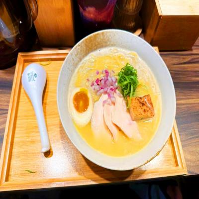

鳥鳴子
鳥鳴子
推薦程度： ★ ★ ★ ★ ☆
推薦程度： ★ ★ ★ ★ ☆
店家介紹
鳥鳴子拉麵店是一家備受推崇的拉麵店，以其獨特的風味和優質的拉麵而聞名。這家店專注於提供正宗的日式拉麵體驗，為您帶來口感豐富、美味無比的拉麵享受。鳥鳴子拉麵店的拉麵湯底是它的招牌特色。湯底經過長時間的熬煮和精心調味，以骨高湯或魚介湯為基礎，濃郁而風味豐富。每一口湯底都散發著濃郁的香氣，令人食指大動。拉麵店以手工製作的拉麵為驕傲。拉麵師傅們將面團揉捏成彈牙的麵條，確保每一口都帶有嚼勁。無論是細麵、粗麵還是平麵，都能滿足您對不同口感的需求。拉麵的質感與湯底的結合，創造出一種絕妙的口味平衡。鳥鳴子拉麵店的配料也是其獨特之處。他們使用新鮮的豬肉片、叉燒、海苔、蔥花等多種配料，搭配在拉麵上，為整道菜增添層次感和豐富口味。每一口都能品嚐到不同配料的風味，使整個餐點更加豐富多樣。此外，鳥鳴子拉麵店還提供各種口味的拉麵選擇，例如醬油拉麵、味噌拉麵、豚骨拉麵等，滿足不同人的喜好。無論您喜歡清淡口味還是濃郁濃醇的湯底，都能在這裡找到心儀的選擇。 新北市三峽區國際一街33號
美食品項
| 品項 | 描述 |
|  |
藤椒雞白湯拉麵是一道具有特色風味的美食，結合了藤椒的香氣和鮮嫩雞肉，以及嫩滑的拉麵搭配。這道菜品融合了辣味和濃郁湯底的特點，給您帶來一種獨特的味覺享受。湯底是這碗拉麵的核心。藤椒雞白湯以藤椒為主要調味料，湯底清澈而清爽，融入了藤椒的辣味和香氣。這種湯底既能帶來微辣的刺激，又能展現藤椒的特殊風味。每一口湯底都能讓您感受到辣味和香氣的融合。拉麵則是這道菜品的主角之一。使用彈牙嫩滑的拉麵麵條，搭配藤椒雞白湯的湯底，讓每一口都充滿了豐富的口感和風味。拉麵的咬勁和湯底的結合，使整碗拉麵更加美味。此外，藤椒雞白湯拉麵還常常搭配其他配料，例如煎蛋、蔥花、海苔、豆芽等，增添了菜餚的層次感和豐富口感。這些配料與湯底和拉麵的結合相得益彰，為整碗拉麵帶來更多的風味變化。
|